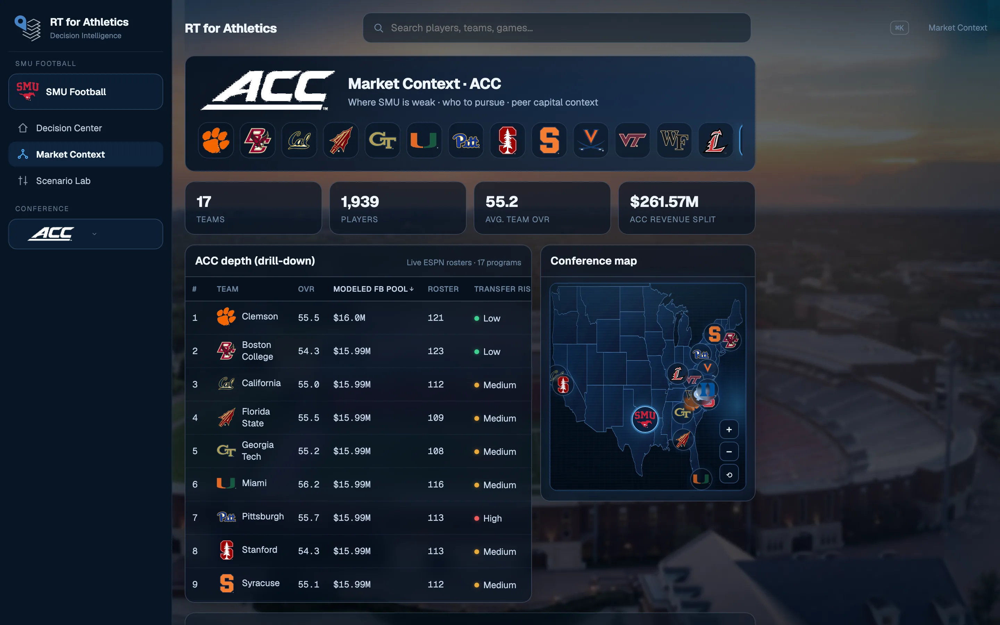
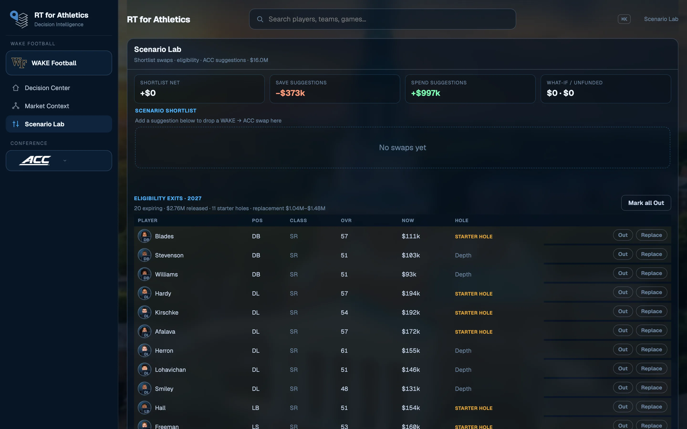
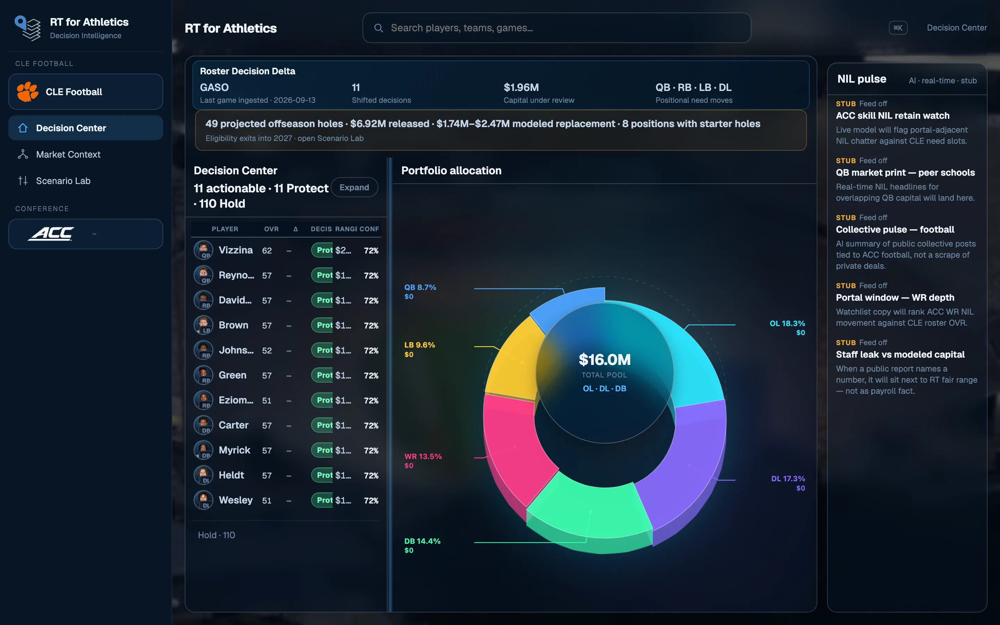
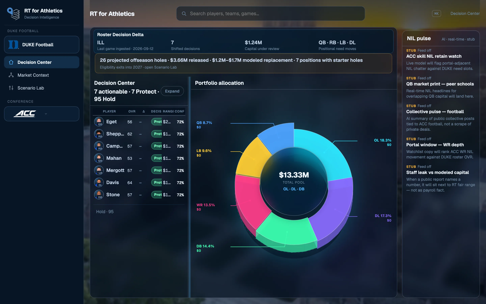

What Decision Center actually shows
Protect, reprice, review — and why the queue is a decision object, not a leaderboard.
Read the noteDecision Center, market context, and scenario modeling for programs that have to allocate roster capital — not guess it.
Program views are examples from the live product, not customers or endorsements.





RT4Athletics reads a program the way personnel actually works: who to protect, what capital is doing, where the market is cheaper or better, and what happens if you move.
A ranked queue of protect, reprice, and review — with modeled capital range and confidence on every name, not a dump of stats.
Usage, OVR, class, and decision movement in one place so performance is read against the roster job, not in isolation.
See how the roster pool is actually allocated — by player and by position — before the next dollar is committed.
Conference depth, peer capital, and replacement paths for where the home roster is thin. External alternatives, not a portal database.
Put modeled value next to the conversation you are actually in, so offers and counters have a number behind them.
Eligibility holes, shortlist swaps, and save/spend suggestions — what-if the roster before you spend the offseason.
Every program runs through the same decision system, with its own roster, market context, and modeled capital.
The home roster, ranked by action. Capital under review, positional pressure, and a queue staff can work — not a spreadsheet they have to interpret.
See conference depth and modeled roster pools beside the home roster’s weak spots. The point is alternatives — who could replace a job, and at what capital.
Projected eligibility holes, shortlist swaps, and save/spend suggestions. Model the offseason instead of discovering it in June.
The same three surfaces open for every home. These frames are examples from the live product, not affiliations.
Analysis of roster decisions, market movement, and what the model is seeing across college football and basketball.
Protect, reprice, review — and why the queue is a decision object, not a leaderboard.
Read the noteMarket context, scenario holes, and program examples will land here.
Browse InsightsWalkthroughs are scheduled. There is no public self-serve plan on this page.